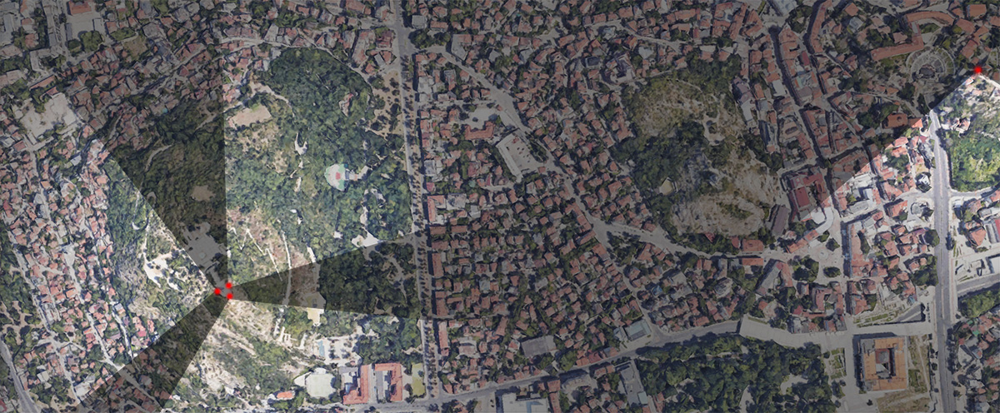

THE CANCELED FUTURES
Web-VR experience - Plovdiv's lost utopias from 4 viewpoints.
STEP 1:
Navigate to the viewpoints using Google Map pin points below,
STEP 2:
Click the corresponding [SCENE] to access the Web-VR scenes on your phone,
Note: you can also find on-site QR accesses for SCENE 2-4 on Burnardzhika Tepe.
STEP 3:
Walk around and drag the scene to match your view,
STEP 4:
Tap the PLAY button and enjoy.
Tips: you may find display deviations on the Google satellite thumbnails, click the 'View Larger Map' for navigation.
Depending on internet connection, it may take a few seconds to load the Web-VR scenes on your phone. Google Chrome is recommended.
[Scene 1] Dzambaz Tepe - View Terrace
[Scene 2] Burnardzhika Tepe - Northeast facing
[Scene 3] Burnardzhika Tepe - Southeast facing
[Scene 4] Burnardzhika Tepe - Southwest facing
A project funded by the Municipality of Plovdiv as part of the 2023 Context Artist-in-Residence Program.